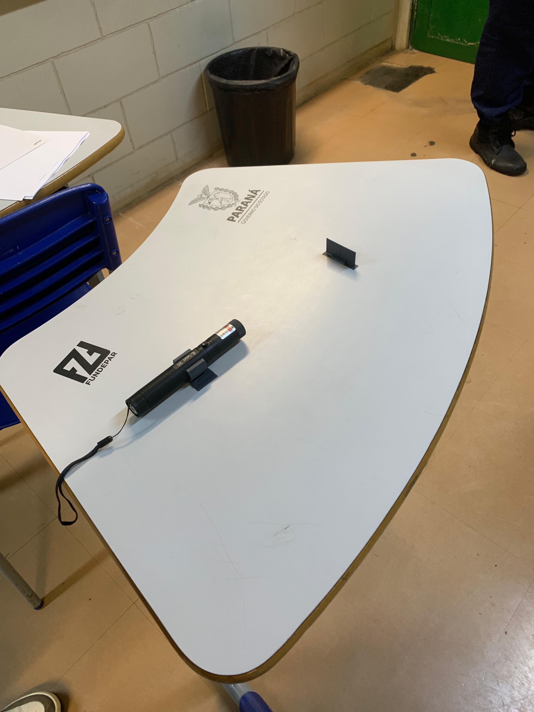
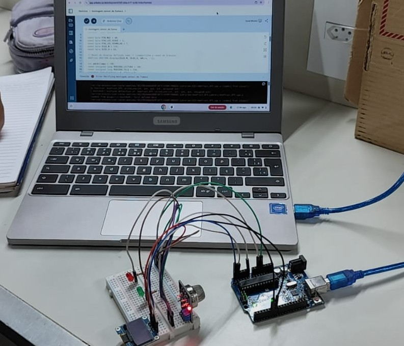
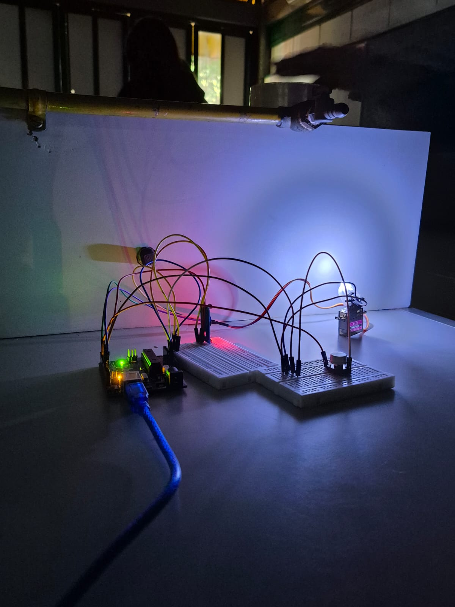

Propriedades da luz
Propriedades da luz
Por que os raios de sol aparecem retos entre as nuvens?
Porque a luz se propaga em linha reta (propagação retilínea) sempre que atravessa um meio homogêneo e transparente, como o ar.
Propriedades da luz
Por que os raios de sol aparecem retos entre as nuvens?
Porque a luz se propaga em linha reta (propagação retilínea) sempre que atravessa um meio homogêneo e transparente, como o ar.
 Reflexão e espelhos
Reflexão e espelhos
Por que a montanha aparece invertida na água do lago?
A superfície da água funciona como um espelho plano: o ângulo de incidência da luz é igual ao ângulo de reflexão, formando uma imagem simétrica.
 Fenômenos da luz
Fenômenos da luz
O que acontece com a luz branca ao atravessar um prisma?
Ela sofre dispersão: cada cor se refrata em um ângulo diferente, separando a luz branca nas cores do arco-íris.
 Fenômenos da luz
Fenômenos da luz
Como se forma um arco-íris no céu?
As gotas de chuva refratam e refletem a luz do sol, dispersando-a nas cores do espectro visível — o mesmo que acontece dentro de um prisma.
 Lentes e óptica
Lentes e óptica
Por que a lupa aumenta a imagem dos objetos?
Porque é uma lente convergente: ela refrata a luz de forma a formar uma imagem virtual e ampliada do objeto observado.
 Óptica do olho
Óptica do olho
Qual parte do olho forma a imagem, como o filme de uma câmera?
A retina, camada no fundo do olho que recebe a luz focada pela córnea e pelo cristalino e a transforma em sinais nervosos.
 Óptica do olho
Óptica do olho
Qual a função da íris e da pupila no olho?
A íris é o músculo colorido que controla o tamanho da pupila, a abertura por onde a luz entra, regulando quanta luz chega até a retina.

Experimentos em salaO que acontece quando um laser passa por uma fenda estreita?
O feixe sofre difração: ao passar pela fenda, a luz se espalha e forma um padrão de listras claras e escuras na parede — uma prova do comportamento ondulatório da luz.

Experimentos em salaComo um sensor de gás ligado a um Arduino detecta gás no ar?
O sensor muda sua resistência elétrica conforme o gás presente no ar. O Arduino lê essa variação e aciona um alerta (LED, display ou som) quando ela ultrapassa um limite definido no código.

Experimentos em salaComo um LDR detecta a luz de um LED girando em um servo motor?
O LDR muda sua resistência conforme a luz que recebe. Enquanto o servo motor gira o LED por vários ângulos, o LDR registra a variação de intensidade luminosa em cada posição.